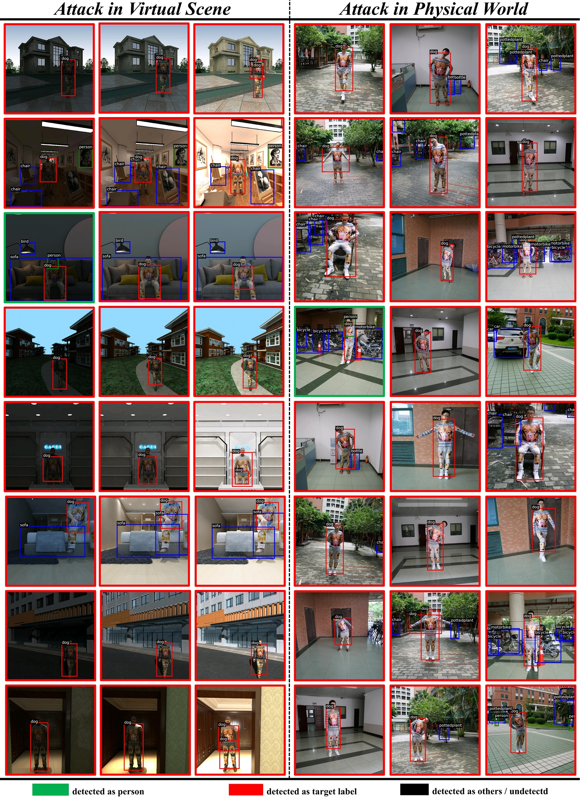

Learning Universal Physical Camouflage Attack on Object Detectors
| Code [Github] | Arxiv [Paper] |
Abstract
In this paper, we study physical adversarial attacks on object detectors in the wild. Prior arts on this matter mostly craft instance-dependent perturbations only for rigid and planar objects. To this end, we propose to learn an adversarial pattern to effectively attack all instances belonging to the same object category (e.g., person, car), referred to as Universal Physical Camouflage Attack (UPC). Concretely, UPC crafts camouflage by jointly fooling the region proposal network, as well as misleading the classifier and the regressor to output errors. In order to make UPC effective for articulated non-rigid or non-planar objects, we introduce a set of transformations for the generated camouflage patterns to mimic their deformable properties. We additionally impose optimization constraint to make generated patterns look natural for human observers. To fairly evaluate the effectiveness of different physical-world attacks on object detectors, we present the first standardized virtual database, AttackScenes, which simulates the real 3D world in a controllable and reproducible environment. Extensive experiments suggest the superiority of our proposed UPC compared with existing physical adversarial attackers not only in virtual environments (AttackScenes), but also in real-world physical environments.
Demo
Examples

AttackScenes Dataset
Requirements: Autodesk 3dsMax 2018; V-ray 3.6
Download link: Click Here.